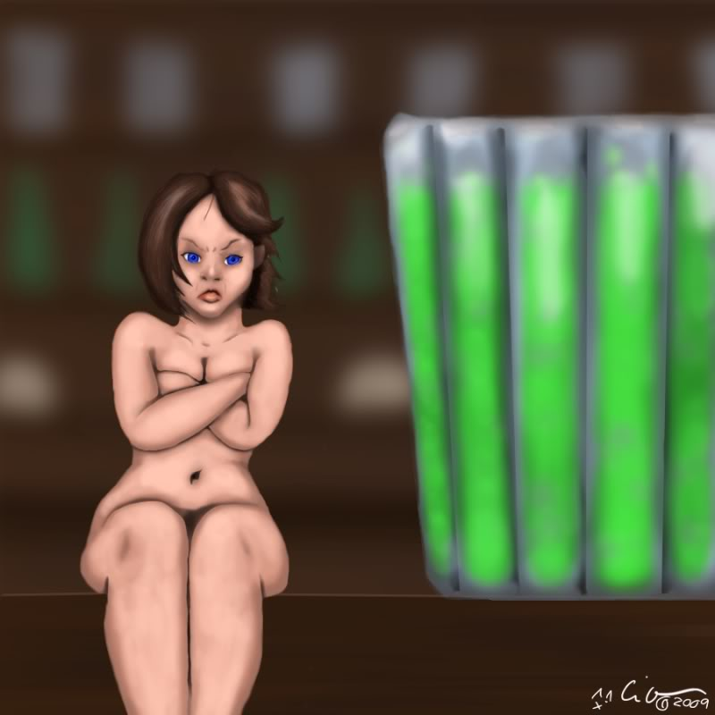

College was when I discovered role playing games,
stuff like Dungeons and Dragons, where you've got no graphics.
I developed my first Original Character for a game I was obsessed with at the time.
This is her, you'll likely recognize her in the image below this one as well.
Truth be told she's actually the subject of all three of these drawings!
This is again reflective of "pillow shading" a habit I am still trying to break.
I was getting an okay understanding of depth by this point.
As mentioned above, this is some more of my Original Character from college.
I did some simple flat coloring over my line art.
I was doing alright at hands, but I was making some pretty bland faces.
Good thing is, having content that I was creating for led me to draw
for most of my time in college. I was very prolific at that time, and I improved a lot.
I was very proud of this clockwork robot when I finished it!
I do remember how I pulled this off, making shapes and adding gradients
with transparency to do the shines.
Were I to go back to this now,
I'd probably have to do the same thing due to the limitations of
the program I've been using lately. But I also know that, at the time I drew this,
I could've used gradient mesh mapping to achieve the desired effect more cleanly.